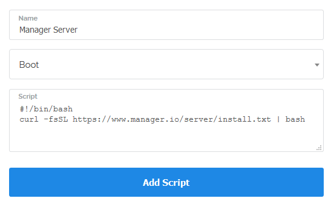
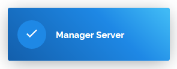

Vultr.com is offering servers which come with 512MB memory and 20GB SSD for only $2.50 USD per month. That is half price what usually other hosting companies charge.
Before you will be able to install Manager Server, you will need to sign up for Vultr.com account. Once you sign up, you will be able to log in to control panel.
Once in control panel, go to Servers tab, then click Startup Scripts, then Add Startup Script button.
Name your startup script install.manager.io and copy & paste to Script field following line:
#!/bin/bash
curl -fsSL https://www.manager.io/server/install.txt | bashSo your input should look something like this.

Then press Add Script button to save your script.

Once your startup script is created, go to Servers section again and under Instances tab, click on the plus sign to add new server.

This will open configuration options for your new server.
In the first step, select location that is the closest to you. This will ensure Manager will run the fastest.

Under Server Type select Ubuntu then select 16.04 x64 version.

Server Size can be the cheapest $2.50/mo instance.

Additional features are optional. You might want to enable Auto Backups.

As startup script, select Manager Server

Then click Deploy Now button at the bottom of the screen.

You will see a message that your server has been added successfully and status of the server should be Installing...

The status will shortly change to Running but you might need to wait another 5-10 minutes for Manager to be actually installed on the running server.
After you wait for 5-10 minutes, look at the list of servers which should look something like this:

Note the IP address which is 45.76.117.79. Open your web-browser and enter xx.xx.xx.xx:8080. where xx.xx.xx.xx is IP address of your server. So for example, if my IP address is 45.76.117.79 then you should enter to your web-browser 45.76.117.79:8080
You should see login screen to Manager Server.

If this is what you see. Congratulations, you are up & running. Just click Login button as default password is empty.
|
It is highly recommended that you don't connect to your server directly via IP address for security reasons. You should have a domain name pointing to IP address of your server. For example, if you own domain name Your server will automatically request free SSL certificate for the domain you choose to use and your connection to your server will be automatically encrypted using HTTPS protocol. |